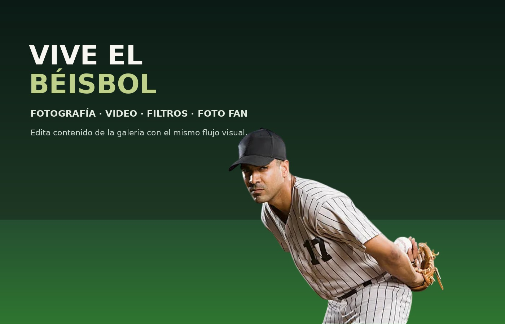
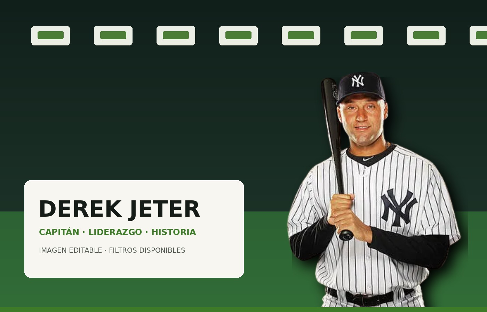
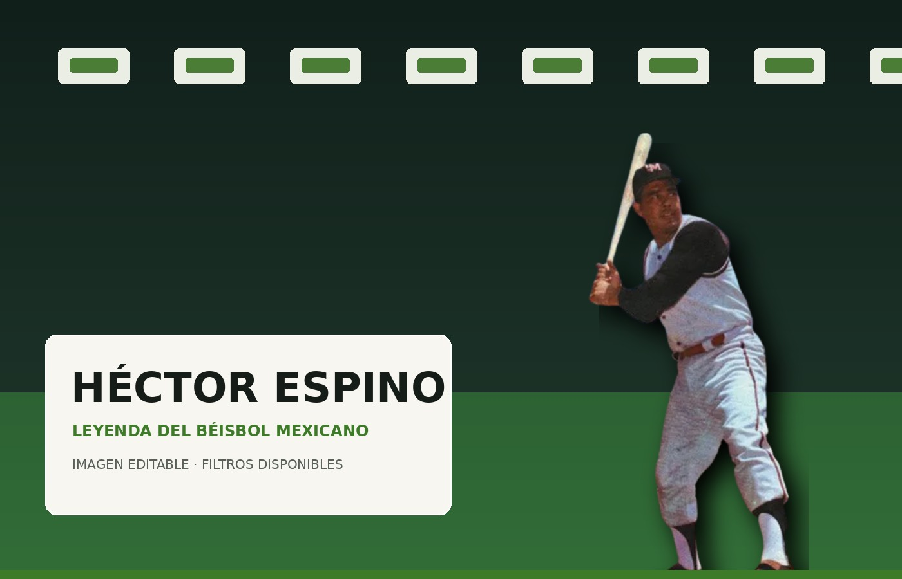
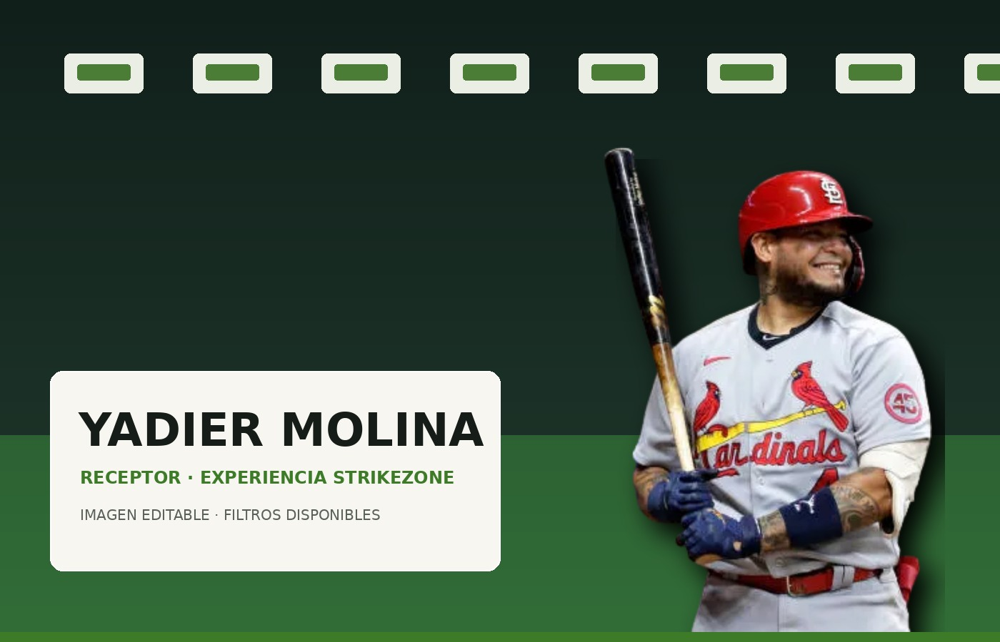
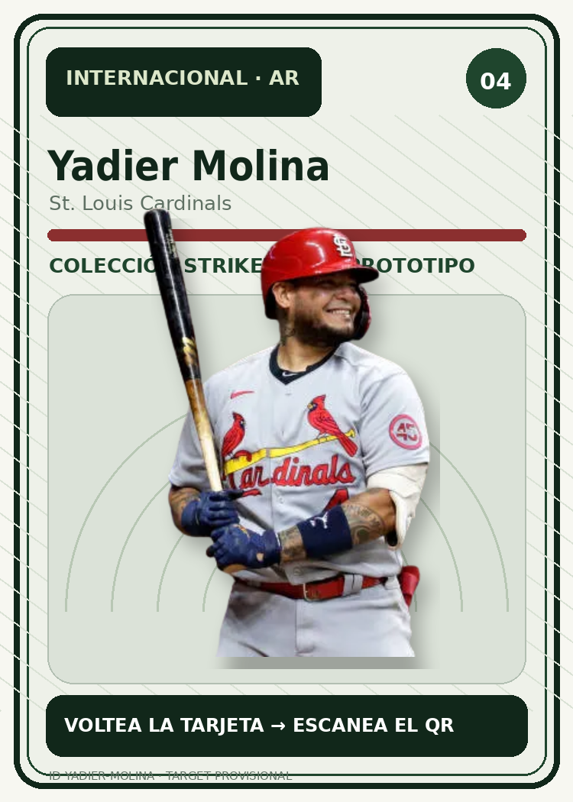

Galería interactiva
Un mismo editor para imagen y video.
Desenfoque, pixelado, cámara térmica, ajustes de color y filtros personalizados funcionan sobre fotografías y clips.
Abrir galería →
Descubre la historia, estadísticas, retos y cartas coleccionables del béisbol con StrikeZone.
Todo en una ruta clara
Abre cualquier medio, aplica filtros permitidos y guarda o descarga el resultado.

Partido destacado, próximos encuentros y noticias organizadas por relevancia.

Historia general del béisbol y una sección dedicada a Sultanes de Monterrey.

Tabla, líderes y referencias del corte estadístico usado por el proyecto.

Trivia o minijuego → recompensa → carta desbloqueada → AR si está disponible.

Galería interactiva
Desenfoque, pixelado, cámara térmica, ajustes de color y filtros personalizados funcionan sobre fotografías y clips.
Abrir galería →Coleccionables + AR
Consulta tus cartas y accede a sus experiencias de realidad aumentada cuando estén disponibles.
Conocer AR →
Coleccionables + AR
Completa el reto correspondiente para conseguir tu carta. Después podrás consultarla desde tu perfil y acceder a AR cuando sea compatible.
Foto Fan
Prueba casco, gorra o pintura de afición, captura el resultado y guárdalo en tu perfil.